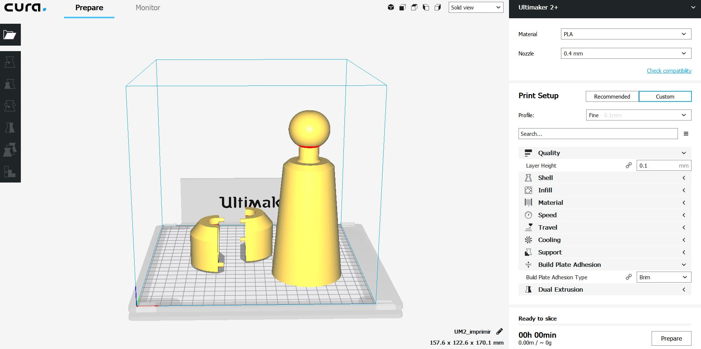
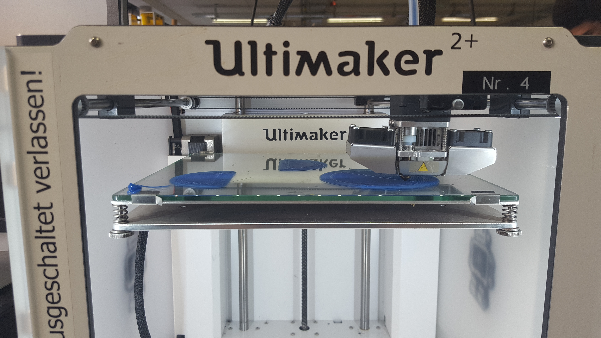
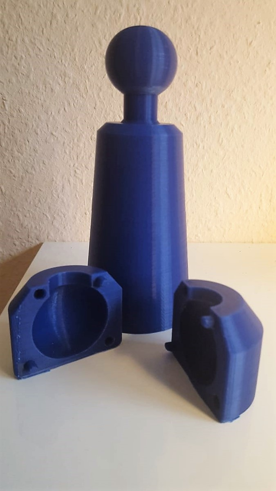
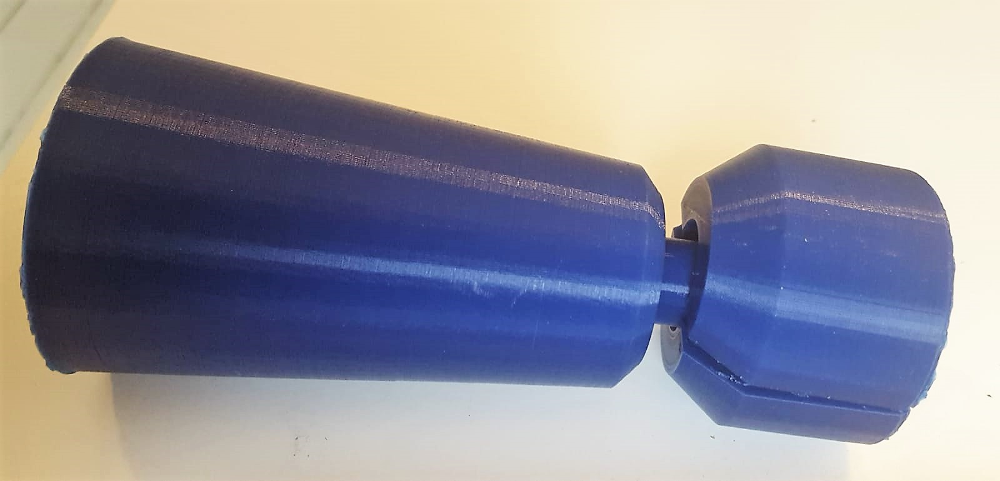

Fabrication for Care
Interdisciplinary Project Winter Semester 2018/2019
Rhine-Waal University of Applied Sciences FabLab Kamp-Lintfort
by Adriana Cabrera, Prof. Karsten Nebe, Prof. William Megill
Faculty Enviroment and Energy
3D PRINTING AND 3D SCANNINCG
3D PRINTING
A 3D printer is a machine capable of replicating 3D designs, creating pieces or volumetric models from a design made by computer, downloaded from the internet or collected from a 3D scanner. 3D printing refers to processes in which material is accumulated sequentially in a bed or platform by different manufacturing methods. Last week, we design a 3D figure, which we wanted to print in this lecture. Firstly we learnt how this machines works, and once that was done we went to print our own design.
To be able to print it, we have to use the porgram Ultimaker Cura, to set each figure of our design properly, and to select the properties and the printer we wanted to use.  Below, it is shown some pictures of how the process was and how looked the final result.    As shown in the last picture, the figure doesn't fixed properly, because the position of the holes hasn't been measured well.3D SCANNING
The rage of 3D printers shows us how easy and practical it can be to bring a 3D model (virtual object) to life, but what happens if you want to replicate an object of reality? Modeling it can be very difficult, so 3D scanners are the ideal solution. A 3D scanner is a device that takes data from any object and converts it into a 3D model that you can then print or use for whatever you want. They usually divide the object into many small points and, saving data from the location of each one, create the 3D object. We made some examples of scaners, scanning different parts of our body. These models were captured with the open source Scanner sample app in the Structure SDK. Bellow, I post some pictures of it.